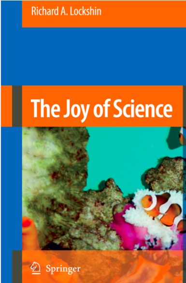

Metodologia Badań Psychologicznych
Małgorzata Basińska
Podstawowe informacje
Skąd do Was przybywam ;)
Małgorzata Basińska
Zakład Badań nad Jakością Życia
Katedra Psychologii
ul. Tuwima 15
Jak się ze mną kontaktować
- Mailowo: mbas@gumed.edu.pl
- Konsultacje - środa 14.00-15.30 (proszę o wcześniejszy kontakt mailowy)
Podręczniki
Podręcznik 1

Podręcznik 2

Jeszcze inny podręcznik
Do znalezienia w zasobach GUMed.

Jeszcze inny podręcznik

APA Manual
Źródła on-line

Format zajęć i zaliczenie
Co będzie na
- wykładach
- ćwiczeniach
- laboratoriach
Trzy szerokie zagadnienia na wykładach
- psychologia jako nauka
- naukowy ekosystem
- podstawowy warsztat metodologiczny
Zaliczenie
- To jest roczny przedmiot (dokładne warunki zaliczenia niebawem na stronie przedmiotu)
- W tym semestrze 2 kolokwia na wykładzie, zadanie zaliczeniowe i prezentacja na ćwiczeniach/laboratoriach
Główne cele
Po zajęciach
- Powinniście umieć odróżnić teorie naukowe od pseudonaukowych, wiedzę o rzetelnych podstawach od informacji i praktyk, które naukowej podstawy nie posiadają
- Posiadać podstawowy warsztat, który pomoże Wam realizować własne badania